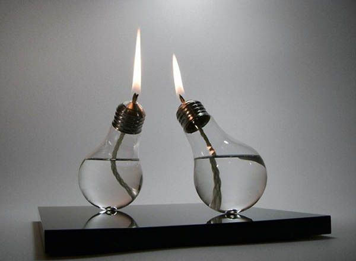

What Does "Life Hacks" Mean?
Essentially, it means self help. Or at best, tricks to make your life better. I'm guessing a defender of the phrase would say you can 'break in and change your own life against your own will' or something, but again, I think that's nonsense. I actually cringe at the phrase, I think it is silly. Trying too hard to sound modern and cool. Self Help, Self Development, Tips to Improve your life; all too old fashioned. Hacking (breaking into computers) - that's cool. So breaking into your own life and making changes - that sounds cool.